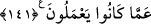

140. Yoksa siz, İbrâhîm, İsmâîl, İshâk, Ya’kûb ve esbâtın (torunlarının) yahûdî,
yahut hıristiyan olduklarını mı söylüyorsunuz? De ki: Siz mi daha iyi bilirsiniz,
yoksa Allah mı? Allah tarafından kendisine (bildirilmiş) bir şâhitliği gizleyenden
daha zâlim kim olabilir? Allah yaptıklarınızdan gâfil değildir.
Bu âyet öncekinin muâdilidir. Yâni siz bu iki şeyden hangisine huccet getiriyorsunuz?
demektir. Yoksa siz, İbrâhîm, İsmâîl, İshâk, Ya’kûb ve esbât; yâni on iki torunu Yahûdî
ve Hıristiyandı, biz de onlara uyuyoruz mu diyorsunuz? Bilindiği gibi “esbât”, İshâk
(a.s.)’ın torunlarına verilen addır. İsmâîl (a.s.)’in torunlarına da “kabîle” denilir.
Zeccâc’dan böyle nakledilmiştir. Âyetin üslûbuyla iki ihtimal de reddedilmiş ve
Yahûdîler ile Hıristiyanlar azarlanmıştır. Yâni Allah’ın dîni hakkında nasıl münâkaşa
edersiniz. Tevrât ve İncil indirilmeden önce yaşamış peygamberler hakkında nasıl
“Yahûdî veya Hıristiyandılar” dersiniz? Gâyet açıktır ki, önce gelenin sonra gelene
uyması ve onun şerîatini uygulaması aklen imkânsızdır.
Ey Muhammed! De ki: “Bunu (onların dînini) siz mi daha iyi bilirsiniz, yoksa Allah
mı?” Elbette Allah! Allah tarafından gelmiş ve kendisi tarafından bilinen açık bir delili
örtbas edip insanlardan gizleyenden daha zâlim kim olabilir?
Ey Ehl-i kitap! Allah katından gelmiş açık bir delîlle, İbrâhîm ve oğullarının, tevhid -
Hanîf- inancına mensûp müslümanlar olduklarını kesin bir şekilde biliyorsunuz. Bunu
Allah size kitabınızda haber verdi. Sonra bunu insanlardan gizliyor ve onların hakkında
Allah’ın bildirdiğinin aksini iddiâ ediyorsunuz. Açıkça bildirdiği bir konuda Allah’a
yalan isnâd etmeye cesâret etmeniz sebebiyle sizden daha zâlim kim olabilir?
İbn Abbas’tan: “Büyük günahların en büyüğünün Allah’a ortak koşmak, yalancı
şâhidlik yapmak ve şehâdeti gizlemek olduğu.” rivâyet edilmiştir. Yüce Allah, bu
konuda bir âyette: “Şehâdeti gizleyenin kalbi günahkâr olur.” (el-Bakara, 2/283)
buyurmuştur. Burada kalbin günahkâr olmasından maksad, kötü bir hale çevrilmesidir
ki, böyle bir durumdan Allah’a sığınırız.
Allah şehâdeti gizleme dâhil, bile bile yaptığınız hiçbir şeyden gâfil değildir ve
işlediğiniz günahları şiddetli bir azâbla cezâlandıracaktır.
141. Onlar bir ümmetti; gelip geçti. Onların kazandıkları kendilerine, sizin
kazandıklarınız da size âittir. Siz onların yaptıklarından sorguya çekilmezsiniz.
Bu peygamberler, bir topluluktu ve ölümle geçip gittiler. Kazandıkları ameller onlara
âiddir. Sizin kazandığınız ameller de size. Hiç kimse diğerinin işlediğinden sorumlu
tutulamaz. Ancak kendi işlediğinden sorumlu tutulur ve onun karşılığını görür. Buna
binâen siz de onların işlediklerinden sorguya çekilmezsiniz.